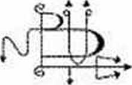

British Museum’daki Ani, Hunefer, Anhai Papiruslarına Göre
Çeviren:
Suat TAHSUĞ
Ruh ve Madde Yayınları
Bu Eserin Her Türlü Hakkı Metapsişik Tetkikler
ve
İlmi Araştırmalar Demeğine Aittir

Kapak Düzeni: Cemal GÜRSOY
İçindekiler
ÇEVİRENİN ÖNSÖZÜ
Eski uygarlıklara, bizimle hiçbir ilişkisi kalmamış gibi görünen bir halkın yaşayış ve düşünüş biçimlerinden bize kalan izlere yanaşmak zordur; ama yararsız değil...
Bu geçmiş uygarlıkların verilerine bakarken iki çeşit önyargı ile karşı karşıya bulunuruz: Birincisi «bilimsel» dediğimiz yaklaşım türü. Bilmeyiz ki yorumlarımız, içinde yaşadığımız dönemin geçer akçesi olan bir «değer yargıları sistemi »nin prizması ardından, asıl gerçeğe bakıldığında «bize göre» bir görüntü elde etmekten ileri gitmemektedir.
İkincisi, bir tür okült, gizemci yaklaşımdır ki «ne varsa eskide var» biçiminde bir zihni faaliyete yol açmaktadır. Kuşku yok ki insanlığın bir şuur-altı birikimi geçmiş deneyimlerin izlerini taşımaktadır. İnsanlık bir bütündür. Bir evrim sürecini hep birlikte yaşamaktadır. Bu süreci incelerken, dönemleri pafta pafta ayırarak birbiriyle hiç ilgisi olmadığı sanılan adaları keşfe çalışmak bizi yanılgıya sürükler.
O halde ne yapmalı?
Sırf eleştirileri getirmek bize faydalı olan ipin ucunu yakalayıp, izlemeye yetmez. Eski uygarlıkların bize yansımış izleri varsa bu, bize bir bildiri, bugünkü yaşamımızla özleştirmemiz gereken bir bilgi yüküdür.
Eski Mısır, Bâbil vb. uygarlıklarla birlikte, Batı uygarlığı dediğimiz bir sürecin başlangıcıdır.
Elinizdeki özet yapıt, bir sürü alışılmamış sözcük, tanrı adı ve ilk bakışta saçma görünen imajlarla doludur. Ancak, şurasını unutmamak gerekir ki M.Ö. 3000 yıl süren bir uygarlık odağı olarak ortaya çıkan bir dünya parçasının bu verilerini bir çırpıda
«Vah zavallı putperestler!» veya «niçin ölüm karşısında bu kadar ilgi ve zahmet?» biçiminde bön yorumlarla geçiştiremeyiz.
Bu çevirisini sunduğumuz yapıt şu bakımdan yararlıdır: Size asıl Ölüler Kitabı’nın bilimsel ve karşılaştırmalı çevirilerini olduğu gibi aktarsaydık, daha ilk satırlarda hiçbir şey anlamamanın verdiği sıkıntıyla kaldırır atardınız.
Oysa kitabın Fransız yazarı, -bütün ciddi araştırmalarını değerlendirmeyi bir borç biliriz- Mısır’a, on dokuzuncu yüzyılda moda, bir Pierre Loti romantizmi İle gitmiştir.
Bu da, kaçınılmazdı. Birbirinden onca uzaklaşmış, birbirine onca yabancılaşmış iki kültürün çakışması, daha başka türlü olsaydı, yararlı olmazdı.
**
Bir kişiden her şeyi birden bekleyemeyiz. Kitabın bir bölümünde, uzaktan gelen müezzinin sesini: «Dervişlerin ağıtları, uzaktan, cinlerin sızlanması gibi geliyordu» diyen bu yazar, içinde bulunduğu ortamın bugünkü realiteleri ile ilgilenmenin gereğini hiç duymamıştı.
Üstelik, sözcüklerin aktarılışında, hıristlyanlıkta kullanılan terimlerden yararlanılmış ki bu da kaçınılmazdı. Çevirimizin sözcükleri konusunda şu açıklamayı yapmamızda yarar var: Bugünkü Türkçemizin İçinde bulunduğu geçiş döneminin gereksinmelerine uyduk, ancak eski sözcükleri de kullanmakta bir sakınca görmedik. Eski Mısır sözcüklerinin transkripsiyonuna gelince, tam doğru okunduğu bilinmeyen bu sözcüklerin Fransızca transkripsiyonuna uyduk. Ancak «Teb» gibi, «Memfis» gibi sıkça tekrarlananları Türkçe okunuşuna göre yazdık.
Metnin bütün o karmakarışık sistematiğine karşın çok ilgi çekici bazı noktalara değinmekte olduğunu da söylemekte yarar var: İlk bakışta bu sistematik reenkarnasyon, evrim gibi bir takım fikirlere hiç de sahip değildir. Ölü, ebediyetler boyu, eğer sâlih: doğrulardan bulunduysa, evrenle bütünleşir. Ancak, Kuran’ da da belirtildiği gibi, bu «mutlu ölüler» öbür dünyadaki cennette yemekte, İçmekte, cinsel zevklerini bile sağlamaktadırlar.
İkinci nokta, öbür dünyanın ikili görünümüdür. Bir tarafta karanlıklar, ıstıraplar, korkunç yaratıklar, korkutucu tanrılar, tuzaklar varken, öbür yönde üstün tesirler, mutluluk hisleri vardır.
Aynı ikilemi, Tibet’in ölüler Kitabı’nda da görürüz: Kızgın tanrılar ve Güleç tanrılar.
Aslında, Mısır’ın bu ölüler Kitabı büyük bir olasılıkla Hindistan’a gitmiş, orada da unutulmaz etkiler bırakmıştır. Ramayana destanında bir düğün sırasında, dışardan gelen hediyeler arasında ölüler Kitabı da anılmaktadır.
Üçüncü ve çok önemli nokta «Kıyametler» meselesidir. Yıkım, kaos ve yeniden doğum.
Bildiğimiz evrende bir toz zerresi olan gezegenimiz Dünya’ ya, bütün Kâinat bilgisinin verileceği düşünülemez.
Kitaptaki evren sözcüğü yalnız dünyamızı (ve öbür dünyamızı) içerir. Gene Kitaptaki Güneş Kayığı da uzak bir perspektifi, arınmış ruh’un katılacağı Plânlar fikrini hatırlatmaktadır.
Suat TAHSUĞ
MISIRIN ÖLÜLER KİTABI
GİRİŞ
BURADA İNSANLARIN, TANRILARIN VE ÖLÜLERİN TARİHİ BAŞLAR.
ÖLÜMSÜZ MISIR... Bilinen en eski uygarlıklar, geçmişin büyük imparatorluklarının çoğu bize teknikleri, san'atları, uğraşları,toplum biçimleri hakkında çok az döküman bırakmışken; arkeologlar Mezopotamya ve Orta Amerika'daki, kumların veya cangıldaki çürümüş bitki ve sarmaşıkların altında kalmış eski şehir katlarını sabırla araştırıp bir kaç iz bulmaya çalışırken Mısır'da, eşi görülmemiş bir uygarlığın varlığını tanımak, ölülerin cömertçe bir hediyesi gibi onu almak için, Mısır'a gitmek yeter- lidir. Bu, altı bin yıl yaşamış bir Mısır'dır ve sizi hemen kabul eder, kendine hayran bırakır. Ona temas edince, Semâvî Nil nehri gibi başsız ve sonsuz, ebediyetin ümitsiz, mumyanın dokunulmaz oluşundan zevk alanların adsız yaşamını paylaşırsınız. Kanıt elde etmek için gerçek tapınakların sütunlarına elleriniz değmeden, Douat'ın sırlarının, Gecenin On iki K apı- s ı’nın, ölü ruhlarını yemek için araştıran timsah ağızlı Büyük Yiyic i’nin, V adi Engereğ i’nin, tanrıların özel mekânlarında, serseri gezegenler arasında kaynaşan canavarların derin sırlarına ermeden Ölümsüz Mısır’ın yaşam ve sıcaklığından bir şey vücudunuza ve ruhunuza sokulur. Çünkü ölümsüz Mısır özellikle de, mavi Nil boyunca sıralanmış dağlardaki dağınık mezarlardadır. Tapmaklar gizli kitaplardır ve büyük kapılarının gerisinde, tavanlarını sütunların tuttuğu dev salonların gölgesinde, eşsiz bir gökyüzünün saflığı ve parıltısı ile yumuşamış tanrı-nehir’ in okşayışları gibi, geçmiş yüzyılların mevcudiyet mucizesi heyecan vericidir. Mısır tarihi, dünyanın yaratılışının karışıklıklarına, ayni zamanda ilk firavunlar olan kardeş katili tanrıların azgınlıklarına bağlanır, Mısır’ın ilk başkenti olan Thi- nis krallarının yaklaşık MÖ. 4000 yılında tahta çıkışı ile. 35 yüzyıl sonraki, Teb’i yıkan Asurbanipal'in yıllıklarının değindiği, kokuşmuş Sait sülâlesi arasındaki Eski Mısır tarihi, bütün uygarlıkların, arasında kültür yönünden olduğu kadar maddî açıdan da en şaşırtıcı bir başarı olarak görünür ve bu evren, zamanın belleğinde ve uzayın soğukluğunda bir anı olarak kalmadıkça böyle sürüp gidecektir. Biliyoruz ki ilk başlarda, yalnız: inisi- yelerin bildiği yaşamı koruyan nefese, üreme gücüne ve korkunç büyüsel güçlere sahip olarak, Memfis döneminin âyin metinlerinde tanımlanan kabile toteminin (ka) koruyuculuğuyla, klan, mutluca gelişmektedir. Bu totem sonraları nom' un (Eski Mısır’da idâri bölüm) tanrısı ve öteki tanrılar arasında en ustası, ulusal tanrı olacaktır.
Ab y d o s’ un Kral Tabletleri, Tinit sülâlesinin, merkez olarak Abydos yakınındaki Thinis yerleşim yerini seçtiklerini kayd etmektedir. Eski Mısır uygarlığının ilk beşiği orası oldu. MÖ. yaklaşık 3315’te «Kuzey ve.Güney Mısır topraklarını dengelemek için» firavun Menes «Krallık Şehri»ni kurdu ve bu başkenti «Mennefer» Memfis diye adlandırdı. Kendinden sonra gelecekler, bundan sonra, tanrısal babalarının elinden çift tac'ı, kudretlerinin büyüsel sembollerini alacaklar, Ho- rus, Râ ve Osiris’le özdeşleşecekler, kıtaların, uyruklarının yaşamının, bitkilerin öz sahibi olacaklar; tanrıların, Büyük Sihirbazların hizmetkârları, en tartışılmaz despotlar olacaklardı; ankh, onza, s e nb; yani sağlık ve güç olacaklardı. Memfis’- in büyük yapıcıları ile Piramitler döneminin başladığını görüyoruz. Bu gösterişli döneme, III. sülâlenin kurucusu, Râ’nın ortağı firavun Zoser’in ve vekili, mimar, Kral Büyüsü Sırlarının Şefi İmhotep’in kişilikleri egemendir. O Arabistan çöllerinin rüzgârları ile aşınmış, Libya'nın yüksek falezleri üzerinde, Osiris’in ölümsüzlüğünü ve eşi bulunmaz bir egemenliğin parlaklığını doğrulayan, o yıkılıp çökmez dev anıt, basamaklı, şaşırtıcı Sakkara piramidi yükselir. Bu mezarı kıskanan Zoser’den sonra gelenler daha büyüklerini yaptırdılar. Bunlar Büyük Piramitleredir. Bu dev yapılar halkın hayranlığını uyandırmak ve firavunun mumyalanmış ölüsü önünde yeniden dirilme ayinlerinin erişilmez bir sırrın derinliklerinde cereyan ettiği, görünüşe göre, küçük ölü odasını korumak için yapılmıştı. Sfenks bu dev mezarları hep gözetler. Kırmızıya boyalı yüzü, sadece güneşin doğduğu ufuk noktasını seyreder. O kral mumyalarının yasak eşiklerinin bekçisidir. Gezegenlerin şarkılarını dinler; ebediyetlerin kıyısında bütün olmuş olanları ve olacakları gözetir. Uzakta, Semâvi Nil'in akışına, güneş - kayıklarının yürüyüşüne bakar. O, Har- makhis’dir; Doğu ufkunun Horus’udur; hatta hayal edilmiş tanrıların yüzüdür. Sonraları V. sülâlenin dindar firavunları zamanında (MÖ. 2680 - 2540) Mısır, güneş tapınakları, dikilitaşlar, astronom rahipler için rasathâneler, -Büyük Görücüler» de denen Ra'nın büyük rahipleri için özel mabetler ile dolar. O zamana kadar tanrı ile özdeşleşmiş firavun insanlaşır. Kuşkusuz her zaman Râ’nın eşiti ve O’ndan çıkmıştır; ancak otokrat atalarının halka uyguladığı mutlak krallık rejimini yumuşatır. Nomark- lar (Nom Başkanları) Nübya ve Sudan’la ticaret eden, -Koku Topraklarına- kadar inip bu bölgelerden, firavunların lüksünü besleyen bazı masalsı zenginlikleri getiren kervan başları ile işbirliği yaparak zenginleşirler. Yeni kentler, büyük tapınaklar kurar, çevrelerini bir memurlar ordusuyla doldururlar. D e ir el Bahari’deki kraliçe Hatchespout'un freskleri bize, Mısır askerlerinden önce, bu para canlısı ve korsan kervancıların baskınlarından birinin hikâyesini anlatır. Gerçekten de hırslan doymaz hale gelmiş firavunlar -Ouaouat ülkesini ve Nübyalılann kafasını ezmek için- generallerini gönderdiler. Bu sömürgelere doğru genişleme dönemini belirleyen zaferlerin, kıyımların can sıkıcı ayrıntılarına değinmiyoruz. Doksan beş yıl hüküm süren II. Pepi zamanında — Bu, tanrı - firavunlardan sonra, bütün dünya tarihinde, en uzun süreli saltanattır — Osiris sırlarının korkunç anahtarlarını ellerinde bulunduran rahipler, rejimin ayrı- calıklı kişileri oldular. Hiç vergi vermezlerdi ve firavununkinden daha gerçek bir gücün sahibi İdiler. Böylece, Orta İmparatorluğun arifesinde, siyâset ve din hukuku arasında acınacak bir kargaşa hüküm sürüyordu. Bir ayrıcalıklar oligarşisi varlığını kanıtlamakta sabırsızlanıyor ve Devlet işlerinin yönetilmesinde gittikçe daha etkin bir katılmayı İsrarla talep ediyordu. Bununla bir- likte rahipler sınıfının istekleri bütünüyle yerine geldikten yaklaşık iki yüzyıl sonra, eski çağ tarihinde hiç görülmemiş toplumsal bir tepki bütün ülkeyi temellerine kadar yıktı. Uzun süren suiistimallerin aşırılığı, vergilerin umursamazcasına adaletsiz dağılımı, vergi toplayıcıların zulümleri, efendilerin kayıtsızlığı, işsizlik, açlık, salgın hastalıklar, görünmezliklere gizlenmiş firavunun apaçık yetersizliği anarşik bir durum yaratmıştı. Kontrol edilemediğinden bir on yıldan öbürüne, gittikçe kötüleşen bu hal, gerçek bir halk ihtilâlinin zaferi ile sonuçlandı. Bu olaylar, çocukluğundan beri deli olan ve bir timsahın dişleri arasında can veren firavunun kurduğu, meşrû olmayan Herakleopo- lis firavunlarının egemenliği sırasına rastlar. Böylece, Eski Mısır, Avrupadakilerden 3200 yıl evvel, bütün şiddet hareketleri, doğ- matik aşırılık nüansları ve kanlı iç savaşları ile, halk egemenliğini tanıdı. Mısır. son Herakleopolis firavunu ile birlikte az kaldı bu kaosta kayb olacaktı. MÖ. 2000 yılına doğru Teb'liler, Nil’in bereket getirici taşma doğrultusunun tersine, güneye yönelen ihtilâl dalgasına set çekmeyi başardılar. Merkezi güç onlara geçti, meşrû ve özgürlükçü firavunlardan oluşan yeni bir sülâleyi tanıdılar. İç politikalarını bir çeşit sosyal devletçilik doğrultusunda yönlendirdiler. Bu sistem daha mütevâzi sınıftan kişilerin din ve devlet görevleri almalarına müsaade ediyordu. Böylece halk, her şeye rağmen, kaba zaferlerinden bir şeyler koruduğu izleniminde oldu. Ülkeye gelince, yavaş yavaş ekonomik ve toplumsal dengesini buldu. Tıpkı hiç bir kum tanesinin yerinde durmayışı gibi, hiç bir millet de en eski çağlardan beri, gayretlerinin mey- valarından rahatça faydalanmayı ümit edemez. Az kaldı ülkeyi yok edecek ihtilâlin acılarından hemen hemen kurtulurken, yeni ve daha büvük bir felâket Nil Vâdisine çöktü: önasva’nın vahşi yaylalarından. Güney Rusya’nın steplerinden, Mezopatamya'- nın taşlık kırlarından, vatanlarını yitirmiş yığınların kovalama- siyle kaçan Hyksos atlılarının istilâsı.
Ancak, yabancı egemenliğe rağmen, hiç bir Mısırlı, ülkenin yazgısına olan güvenini yitirmedi. Kutsal ateşler söndürülmedi ve XVIII. Teb sülâlesi (MÖ. 1580 - 1320) Asyalıları kovmak için inatçı, karışık, güç bir mücâdeleye girişti ve kahraman, cesur, heyecanlı bir halkın bütününü yanında buldu. 111 Thoutmes, talihi açık bir fatih oldu. Tel - Amama tabletleri zaferlerini anlatır. İmparatorluğu Libya vahalarından Suriye çöllerine kadar yayılıyordu. Katipleri, doğu dillerini bilen Babillilerdi. Bu, Mısır’ın en parlak dönemidir: uygarlığı en yüksek noktasındadır; egemenliği bütün Yakın Doğuya yayılmıştır. Teb, AsyalIları kovduktan sonra, dünyanın en zengin ve en kalabalık kenti olmuştur. Amon' un şehrinde, her yerde, bazı saatlerde, mezar olan mabetlerin dev kapıları önünde çifte dikilitaşlar yükselmektedir. Eski Mısır'da tahta çıkan tek kadın, ünlü kraliçe Hatchespout, kendinden sonra gelecek ve onu kötüleyeceklere şöyle,demektedir: «-Teb’de yüzlerce güneş dikilitaşları diktirmiştir; çünkü Teb, dünyanın başlangıcında gök’ü yerden ayırmak için tanrıların yerleştirdiği kutsal tepedir-.Pruvaları süslü gemiler Nil nehrinde ard arda süzülürler. En güzel, diz çökmüş koçbaşlı sfenkslerin binlercesi mabede giden yolları korurlar. 500 ton ağırlığındaki anıtsal firavun kabartmaları mabetlerin avlularında sessizce nöbet tutar. A ton dinsel reformunu uygulayan firavun Akhenaton’un saltanatına da değinmek gerekir. Bu, güçlü Teb rahiplerine zorla kabul ettirilen tek ve evrensel bir Tanrıdır. Yirmi yıl boyunca, Akhenaton, mabetlerdeki ve mezarlardaki ilkel tanrı sûretlerini yıktırdı. Bedeni onulmaz bir hastalıktan çürürken, metafizik kurgularda yetenekli olan bu firavun, bir iç ateşle kavrulmakta idi. Ayni yoğunlukta ıstırap çekiyor ve tahayyül ediyordu: yeni bir insanlık; saflaşmış ve tek bir tanrıya tapan. Bu Tanrı evrensel ve iyi idi. Ondan çıkan ışıkların okşayıcı elleri vardı. Aşırı mistik düşüncelerinde içtendi. Bu ıstırap çeken yalnız adam, Mısır'ı, sayısız tanrıların basit hizmetkârları olup, hiç de saf ve ilhamli kişiler olmayan, krallığın iktidarı için kötü etkili, çok zenginleşmiş Amon rahiplerinden kurtarmak istiyordu. Her yerde Aton'un isminin istekle anılmasını diliyordu. Çünkü Aton, şefkat ve ışık tanrısıy- dı; şefkatini ve ışığını bedenlere ve ruhlara aktarıyordu. Yalnız Aton’un, evrenin kesin şekli ve kalıbı olduğunu beyan ediyordu. İsa gibi o, tanrı kelâmı oldu ve havariler buldu. Putlarla ve çok güçlü rahiplerle dolu Teb’i bıraktı, bugünkü Tel Amarna'nın bulunduğu yerde ve geriye hiç bir iz kalmamış yeni bir başkent kurdu. Buradan yalnız «Tel - Amama resimleri- denilen şaşırtıcı resimler kalmıştır. Bunların orijinal, taze, dinsel olmayan sade güzellikleri Kahire Müzesinin salonlarından birinde, hayranlıkla seyredilebilir. Ciddi, kanaatkar ve müteassıp bu kralın saltanatı — Daniel - Rops onu «Tanrı sarhoşu Kral» diye pek güzel adlandırmıştır — bize uzak, anlaşılmaz, kıvılcımlar saçan bir peri masalı gibi gözükmektedir. Kendinden sonra gelen, damadı Tou- tankhamon oldu. çifte tacı giydiği günde, çocukluğunun tanrısı Aton'u yadsıdı; sarayı ve devlet dairelerini, MÖ. 1348’de yeniden Teb’e naklettirdi. Bütün Mısır’da yeniden Amon kültünü ve kutsal Teb üçlüsünü, kayınpederince kovulan rahiplerin ayrıcalık ve güçlerini ünlü emirnâmesi ile iade etti. Ne olursa olsun, Toutankhamon çok genç öldü; bir söylentiye göre de öldürüldü. Mezarı Krallar Vadisinde, Özellikle saklandı. Ve bu mezar, kabul etmek lâzım ki, Teb mezarlarında firavunlara ayrılmış yerlerin dışında kazıldı. İyice saklanmış olduğunu da itiraf etmemiz gerekiyor; çünkü 35 yüzyıl boyunca, mezarların topografyasını çok iyi bilen kral mezarı soyguncuları oraya erişemediler. 1923 yılında, bir raslantı sonucu Lord Carnarvon tarafından keşfedildi. Bu keşfin ve dünyada akislerinin ne kadar büyük bir ilgi uyandırdığı bilinmektedir. Yüzyıllar yüzyılları kovalar. Ramseslerin egemenliğinde (MÖ. 1310- 1080) Mısır daima kendini dinleten kudretli bir millettir; kültürel ve siyasal açıdan yoğun bir prestiji vardır. II. Ramses ve ondan sonra gelenler yıkıntıları hâlâ devâsâ olan yapılar inşa ederler: Karnak’taki Büyük Amon Tapınağının sütunlarla tavanı tutturulmuş salonu -30.000 ton yontulmuş taş gerektirmiştir-, I.Seti'nin Gournah’daki cenaze mabedi ve yüzlerce işlenmiş sütun; Abydos’daki Osiris, îsis ve Horus’a adanmış mabet ve hafif kabartmalar halindeki harika boyalı heykeller sayesinde, Osiris 'in günlük güneş kültü ayinlerinin nasıl olduğunu tamamlandığı günkü gibi anlatan yedi paralel mihrap; Libya'daki, fa- leze oyulmuş Ebu-Simbel mihrabı; II. Ramses!’in pembe granitten, Herodot'a göre Mısır'ın en büyük ve en ağır (1200 ton!) heykeli. Fakat Ramses inşacılarının bu ani alevlenmesi, firavunlarının birbirinden daha büyük anıtlar yaptırmaktaki telâşı, öleceklerini hissedenlerin, yüzyılları aşacak son ve şaşaalı bir parlaklık bırakmak isteyenlerin bu vâsi ve kalabalık Mısır’ı, ölümsüz Mısır'ın son şarkısıdır. Zaferlerin zamanı geçmiştir ve yıkım yakındır. İstilâcı yeniden belirir; düşman çeşitli adlar altında gözükür, fakat hastalık hep aynıdır. Ve felâketlerin heyûlâlaru birbirini takip eder; o kadar uzun zaman insan uygarlığının ruhu olmuş olan bu toprakların her yerinde, zamanların sonuna kadar uzayan o korkunç gürültü işitilir: Yıkılan tapınakların ve yüzleri parçalanmış tanrıların çökme gürültüsü. Her taraftan düşman halklar üşüşürler. Nil boyunca güzelim şehirler yanar. Onlar ey orduların Moloch’u, sana takdim edilmişlerdir. Bu şehirleri yıkanlar, Asur kökenli kahramanlar, bilinmez cangıllarda doğmuş Libya beyleri, Teb Amon’undan bir Habeş ilâhı yaparlar; M.Ö. 661 yılında, Memjisi kırk gün yağmaladıktan sonra, 100 kapılı Teb önünde gözüken Asurbanipal’in Ninive’lileridir... Burada Eski Mısır tarihi biter. Çünkü Asurluların onca şiddet, metot ve onlara özgü vahşetle Teb’i yıkmaları Doğu halkını alt üst etmiştir. A. Moret, Teb'in yıkıntılarını kazarken, 2600 yıl evvel nasılsa, sivri uçlu Asur miğferleri bulduğunu yazar. Bu da bize şehrin tahribinin süresi ve korkunçluğu hakkında bir fikir vermektedir. Akdeniz halkının hayret ve dehşeti o kadar hatırlardadır ki, Peygamber Nahum. 50 yıl sonra, hiçbir zaman pişman olmamış, doymamış, küstah ve zalim Ninive’yi şiddetle suçlayacak ve yakın yıkımı hakkında kehanette bulunacaktır. Amon'un kral şehrinin korkunç yazgısı daha hatırlardadır. O, peygamberlere özgü, olayların önsezişiyle şöyle haykırır: «Hatırla ey Ni- nive! Eskiden Nİl'in bağrında oturmuş Teb’den daha kuvvetli misin? Hatırla ey Ninive, bir zamanlar dünyanın mihveri olan Teb’t; kibrini, ululuğunu, yüzyıllar süren güzel yüzünü! Hatırla ki artık tanrıları tapınaklarında oturmuyor; rahipleri ve soyluları zincire vuruldular, halkı kayboldu; hatırla ki Teb çocukları her sokak köşesinde ezildiler; onlarca Teb gecesi, bütün o geceler, dehşet geceleri idi.
I. BAB
EVREN KENDİNİ OLUŞTURUR VE TANRISAL; HERŞEYDEDİR.
Her şey ölüler Kitabında yazılmıştır... Çok eski zamanlarda, düzgün yüzlü K e o p s veya S a k k a r a piramitleri yapılmadan çok evvelleri, Yaratılış sırlarına İnisiye olmuş Eski Mısırlılar, Güneşin her sabah, N o û t’un karnından çıkıp, her akşam, batının son ışıklan yaşayanların evreninin sınırlarını belirlerken, N o û t’un ağzında kaybolduğunu biliyorlardı. Ve ayaklarımızın altındaki öbür dünyada toplanmış ölüler, güneşin gece yolculuğunda, D o u a t’ın on iki bölgesindeki değişimlerini seyredebiliyorlardı. Ve burun deliklerinde yeniden hayat nefesini bulan ölüler Güneş Kayığının, köpek başlı maymun tapınıcıları ile, sihirli kürekleri ile ve güneşi skarabe (bu böceğin Türkçe İsmi bok böceği’dir) yani Khepra, oluşan tan- n biçiminde görüyorlardı.
Nil Vadisinin eski ahâlisinin ölüler âlemine girmeden ve BİLGİLER KİTABI’nın sayfalarını açmadan evvel, onların ebediyeti olacak şaşırtıcı evrenin kapıları açılınca, ölüleri bekleyen tanrılardan birkaçını öğrenmeliyiz.
PTAH
PTAH var olan her şeyi yarattı. Ondan evvel, Veda'larda yazılı olduğu gibi «ne varlık, ne de yokluk vardı. Yukarda ne uzay, ne de gökyüzü vardı. Hareket eden neydi? Nerede ve kimin yönetiminde? Derin, dipsiz su mu vardı? O zaman ne ölüm ne ölümsüzlük, ne de geceyi gündüzden ayıracak bir belirti vardı. B İ R, nefes almadan soluyordu, kendiliğinden hareketli idi: ötesinde hiç bir şey mevcut değildi. Başlangıçta karanlıklar karanlıklan örtüyordu. Boşlukta hapsolmuş BİR, sıcaklığın gücü ile vücut buldu». (Ri g v e d a, x, 129— Louis Renou çevirisi). Ptah, tanrıları ve «ilkel sulara batmış» ülke olan Mısır’ı yarattı. Onun sa-